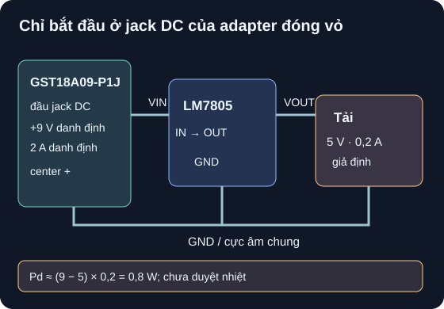

Adapter, Bộ Ổn Áp & Pin
Bắt đầu ở đầu ra DC của adapter đóng vỏ; lập ngân sách trước khi chọn regulator.
- Vẽ đúng ranh giới adapter DC đóng vỏ → regulator → tải, dấu +/−, chân IN/OUT/GND và đường hồi dòng.
- Tính ngân sách điện áp, dòng, công suất tuyến tính và điều kiện nhiệt theo đúng package/PCB; phân biệt ước tính với giới hạn được bảo đảm.
- Giải thích buck không cách ly cần diode, cuộn cảm, tụ và layout; không suy định mức module từ tên LM2596.
- Phân biệt nhãn adapter, thông số IC, dung lượng cell, mạch bảo vệ và mạch sạc; nhận biết dữ liệu còn thiếu cho phần cứng.

Đọc mô tả A07-1
Chỉ tại đầu jack DC của adapter GST18A09-P1J, chân tâm dương cho 9 V danh định, vỏ ngoài là cực âm. Cực dương tới IN của LM7805; OUT cấp tải giả định 5 V/0,2 A. Cực âm adapter, GND IC và cực âm tải chung tạo đường dòng về. Tổn hao tuyến tính xấp xỉ 0,8 W. Hình không biểu diễn dây phía lưới, pin, charger hay cấu hình tụ đủ để lắp mạch.
1. Đặt ranh giới đúng trước khi tính
MEAN WELL GST18A specification, file in ngày 2026-04-03, tr. 1–2 ghi model GST18A09-P1J đầu ra danh định 9 V, 2 A, 18 W; plug P1J 2,1×5,5 mm có tâm dương theo hình cực tính tr. 1. Adapter là khối AC–DC đóng vỏ. Bài học chỉ bắt đầu tại đầu jack DC đã có sẵn, không có bước mở hộp, đấu hoặc đo phía lưới. Thông số 9 V không có nghĩa luôn đúng 9,000 V: bảng hãng nêu dung sai/điều kiện đo tại đầu plug và có đường giảm định mức theo môi trường. Mạch thật cần đầu jack đúng loại, cực tính được kiểm và mức áp thực tế trong toàn dải làm việc.
TI LM340/LM7805 Rev. L, Fig. 18 tr. 14–15 và §10 cho mạch ứng dụng fixed 5 V với chân IN, GND, OUT; tụ input 0,22 µF cần khi IC đặt xa tụ lọc nguồn, tụ output 0,1 µF giúp đáp ứng quá độ và không bắt buộc cho ổn định trong mạch tham chiếu đó. Giá trị tụ trong hình là theo IC/điều kiện TI, không thay việc kiểm khoảng cách dây, vật liệu và part tụ. Với package TO-220 NDE phải đối chiếu pinout của đúng biến thể và hướng nhìn trước khi nối.
| Khối | Thông số nói gì? | Không chứng minh điều gì? |
|---|---|---|
| Adapter GST18A09-P1J | 9 V/2 A/18 W danh định tại đầu ra theo điều kiện của spec tr. 1–3. | Rằng LM7805 hoặc PCB chịu được 2 A, hoặc mọi jack 9 V cùng cực tính. |
| LM7805 IC | Giữ gần 5 V trong dải input, tải, nhiệt được ghi cho biến thể/package cụ thể; TI Rev. L, bảng Electrical Characteristics. | Rằng package tản được công suất tính ra hay module lạ có cùng chân và nhiệt. |
| Cell pin | Dung lượng danh định liên quan dòng/thời gian trong điều kiện test của cell. | Mạch sạc, bảo vệ, giới hạn dòng, đấu nối hoặc thời gian chạy thực; cần datasheet cell và sơ đồ hệ riêng. |
2. Ví dụ giải: ngân sách tuyến tính 9→5 V
Mô hình bài toán: đầu jack DC được giả định 9,0 V cố định; LM7805 có OUT=5,0 V, tải 0,20 A liên tục, bỏ qua dòng tĩnh và nhiệt độ. Đây là phép tính sơ bộ, không nói hai thiết bị đã được ghép và thử thật.
- Đầu ra:
Pout=5,0 V×0,20 A=1,0 W. - Tổn hao IC:
Pd≈(9,0−5,0) V×0,20 A=0,80 W. Phần điện áp 4 V rơi trên regulator tuyến tính; công suất đó thành nhiệt. Dòng tĩnhIqvà sai số điện áp chưa cộng. - Công suất vào mô hình:
Pin≈9,0×0,20=1,8 W; hiệu suất mô hìnhη≈1,0/1,8≈55,6%. Không áp tỷ lệ này cho buck hoặc cho adapter AC–DC. - Kiểm điện áp: so
VIN,minở jack dưới tải với điều kiện điều chỉnh điện áp trong bảng LM7805 Rev. L; giá trị 7,5 V xuất hiện trong khoảng thử một số chỉ tiêu, không là tuyên bố mọi tổ hợp tải/nhiệt đều ổn tại đó. - Kiểm nhiệt:
ΔTj≈Pd×RθJAchỉ khi đã chọn package và cấu hình PCB/môi trường tương ứng. TI Rev. L §6.4 bảng Thermal Information ghiRθJA=23,9 °C/Wcho NDE/TO-220 trong điều kiện thử chuẩn; thay 0,8 W cho≈19,1 °Clà minh họa theo đúng điều kiện chuẩn đó, không phải dự báo nhiệt của mạch lắp trên breadboard hoặc trong hộp. Phải xét nhiệt môi trường, tab/heatsink/PCB và giới hạnTjcủa đúng part.
Nguồn cho thông số nhiệt: TI LM340/LM7805 Rev. L, §6.4 tr. 4, cột NDE TO-220. Phép tính 0,8 W không phải giấy phép cấp điện; đây là chỗ lập ngân sách trước khi quyết định dùng linear, buck hay đổi nguồn.
3. Khi nào cân nhắc buck và pin?
Regulator buck chuyển mạch hạ áp mà không cách ly nguồn vào/ra. TI LM2596 Rev. G, Fig. 9-10 và Table 9-2 tr. 23 có mạch ứng dụng thật với VIN(max)=12 V, VOUT=5 V, ILOAD(max)=3 A, diode Schottky, cuộn cảm và tụ input/output. Điều kiện 3 A thuộc cấu hình tham chiếu và thiết kế nhiệt của IC; không gán cho mọi module bán lẻ. Diode hồi dòng nối từ GND (anode) lên nút switch (cathode); L từ nút switch sang VOUT, tụ output từ VOUT về GND. TI §9.1.4 cảnh báo loại chỉnh lưu 1N5400 quá chậm cho vị trí này. Bảng hiệu suất và nhiệt phải lấy tại đúng VIN, IOUT và PCB; không lấy một tỷ lệ cố định cho mọi buck.
Pin là một nguồn DC khác có áp thay đổi theo trạng thái và nội trở. Mô hình sơ bộ có Vterminal≈Voc−I·r, dung lượng lý tưởng t≈Q/I; cả Voc, r, Q phụ thuộc cell, nhiệt, tuổi và dòng. Những biểu thức này không xác nhận mạch sạc hay bảo vệ. Bài này chỉ làm ngân sách trên giấy, không đấu cell Li-ion, không thiết kế charger từ nhãn dung lượng và không thay adapter bằng cell mà bỏ kiểm dải áp.
4. Hoạt động tái lập: sáu kịch bản nhiệt
Tạo cột
VIN={7,5;9;12} VvàIOUT={0,1;0,2} A; cố định VOUT=5 V chỉ để tính mô hình. Với mỗi hàng tínhPd=(VIN−5)×IOUT,ηmodel=5/VIN. Ghi “không cộng Iq, không xác nhận regulation”.Đối chiếu TI Rev. L, §6.4 bảng nhiệt và bảng LM7805 Electrical Characteristics: ghi part/orderable, NDE/TO-220 hay package khác, dải VIN test, dòng,
RθJAvà điều kiện. Không dùngRθJAcủa package khác để duyệt PCB đang có.Đối chiếu GST18A09-P1J tr. 1–3: chỉ hàng 9 V là gần nhãn adapter này; hàng 7,5/12 V là tình huống giả định hoặc nguồn khác, không là dải áp ra được hãng cam kết cho GST18A09-P1J.
| VIN giả định | IOUT | Pd mô hình | η mô hình | Nhận xét |
|---|---|---|---|---|
| 7,5 V | 0,1 A | 0,25 W | 66,7% | Kiểm headroom/điều kiện TI |
| 7,5 V | 0,2 A | 0,50 W | 66,7% | Kiểm headroom/điều kiện TI |
| 9 V | 0,1 A | 0,40 W | 55,6% | Gần nhãn adapter; chưa tính nhiệt thật |
| 9 V | 0,2 A | 0,80 W | 55,6% | Ví dụ mục 2 |
| 12 V | 0,1 A | 0,70 W | 41,7% | Giả định nguồn khác |
| 12 V | 0,2 A | 1,40 W | 41,7% | Giả định nguồn khác |
Chỉ lắp/cấp nguồn sau khi có mã regulator, package, pinout, jack, sơ đồ tụ và bảo vệ, dải nguồn đo tại jack, tính nhiệt theo PCB/hộp, nguồn giới hạn dòng và người duyệt. Không mở adapter hoặc đấu dây phía lưới. Pin Li-ion cần dự án riêng với cell, bảo vệ và charger được duyệt trước mọi đấu nối.
Giả định nguồn DC cách ly khác cung cấp đúng 12 V tại jack, regulator tuyến tính lý tưởng cấp 5 V/0,1 A. Tính công suất ra, tổn hao regulator, hiệu suất mô hình. Có thể chốt “an toàn dùng LM7805 không tản nhiệt” chưa?
- Mô hình, 1 điểm: nguồn 12 V DC cách ly → regulator → tải 5 V, dòng 0,1 A; bỏ dòng tĩnh/độ lệch áp.
- Công thức và đơn vị, 1 điểm:
Pout=VoutI,Pd≈(Vin−Vout)I,η≈Vout/Vin. - Số tính, 1 điểm:
Pout=0,5 W;Pd=7×0,1=0,7 W;η≈5/12=41,7%. - Giới hạn, 1 điểm: chưa chốt phần cứng. Kiểm VIN cả sai số/quá độ, khả năng điều chỉnh 5 V, package và
RθJAtheo PCB/heatsink/hộp,Tj, cực tính jack, dòng tĩnh và tụ theo TI Fig. 18.